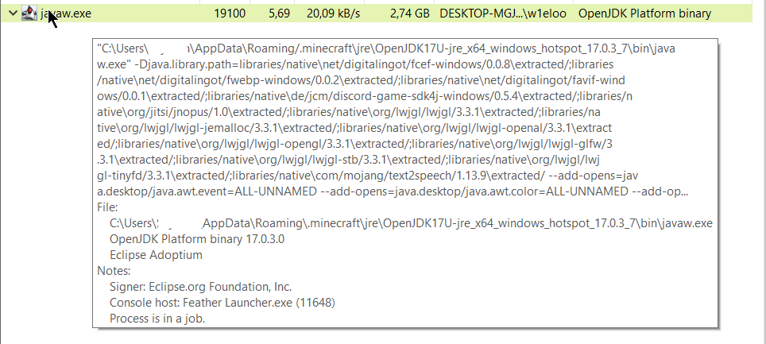
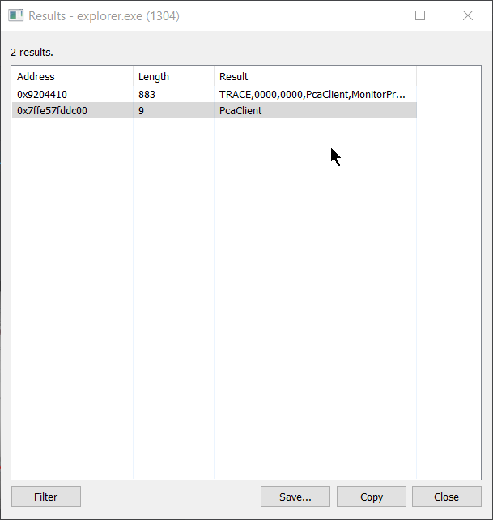

Czego tam szukamy?
Sprawdzamy wersje klienta, w tym przypadku jest to (feather launcher) - (Minecraft 1.19.4 (1.19.4-feather/Feather Fabric/feather/Fabric)
Sprawdzamy (HitBoxy)
Wciskamy kombinajce przyciskow (f3 + b). Spradzamy czy sa one poprawne. Tak wygladaja poprawne (HitBoxy)
- Sprawdzamy chat. Wpisujemy nastepujace znaki i patrzymy czy pojawia sie (cheaty)
Przyklady
・ .
・ #
・ .bind
・ =
・ $
・ !
Sprawdzamy w (Minecraft) kombinajce przyciskow (R-shift)
Jezeli sie pokaze menu (cheatow) to banujemy za (cheaty). W przypadku Feather Clienta bindujemy menu pod inny przysick. Wchodzimy w menu. Wchodzimy w general i bindujemy przycisk pod "u" np. PO tym znowu wciskamy kombinajce przyciskow (R-shift). Jezeli nic to nie pokaze to idziemy dalej
Warto rowniez uzyc klawiatury ekranowej (W przypadku gdy sprawdzamy przez discorda, jezeli to anydesk to raczej bedzie to zbedne)
Sprawdzamy paczki zasobow/Resource Packs
Wchodzimy do folderu (.minecraft) najlepiej przez folder z paczkami. Wtedy ukazuje nam sie docelowa sciezka do plikow mc. Wchodzimy do folderu (mods). Szukamy tam modow. Wlaczamy ukryte elementy. Kasujemy potem mody. Jak sie nie usuna to znaczy ze sa one aktywne.Wchodzimy do folderu (logs). Wyszukujemy (latest.log). Szukamy tam fraz typu: xray, wurst, meteor, swapper, swap, PlayerHealthsIndicators, reload (tam sprawdzamy txt (tam sprawdzamy txt (wczytywane) )
Na zamieszczonej 2 grafice sa ukazane wczytywane foldery z folderu (mods):
- betterf3, dynamicfps itp.
Przywiazujemy uwage do (ctrl + f = "reload"). Tam sa pokazane rowniez wszystkie wczytywane txt. Jak sprawdzamy kogos pod xray to moze sie to ukazac pomocne. Zawsze mozna rowniez po kolei sprawdzic wczytywane txt (mozna sie zdziwic!)
W moim wypadku moja ostatnia tekstura jest file/Alternative-Shaders.zip
- Sprawdzanie mods
Na poczatku logow sa wczytywane modyfikacje. Sprawdzamy wczytywane mody i sprawdzamy folder (mods) i poszukujemy moda ktory nie jest uwzgledniony w latest.
W przypadku Feather mozemy sprawdzic to tak. ESC, MOD MENU. Ukazuje sie nam takie cos.
Tutaj ukazane sa wgrane mody. Mozemy to spradzic rowniez w Feather launcher
Jezeli dany mod jest odznaczony to znaczy ze nie jest uzyty. (Warto sprawdzic logi gry - Latest.log z racji tego ze gracz moze to celowo odznaczyc podczas sprawdzania!)
Jezeli nie znajdziemy nic w modach to idziemy do folderu z (version)
- Sprawdzamy werjse gracza
Wchodzimy do mc. Sprawdzamy pod f3 na czym gra (jeżli to launcher np: feather, Badlion, Lunar to mamy to ulatwione). Wchodzimy do folderu (version). Zaznaczamy ukryte elementy: enabled. Kasujemy wersje na ktorej gra. Jak sie usunie to sie ukrywa (wtedy kasujemy wszystkie wersje w poszukiwaniu odpowiedniej). Jak wszystkie wersje sie usuna to znaczy ze gracz sie ukrywa i to juz praktycznie pewnosc ze ma cheaty. Jak sie nie usunie to wchodzimy w pliki tej wersji i sprawdzamy ich zgodnosc (czy sa one poprawne).
- Sprawdzanie controls/(key binds)
To wazne poniewaz tam sa przypisane bindy. Tam moga byc cheaty typu: meteor, swapper, serca, minimapa itp
- Sprawdzanie Jezyka/Language
Wchodzimy w Language/Jezyk. Szukamy tam cheata typu: wurst
Jezeli gracz jest na Feather Client to musimy przywrocic ("Original Pause Screen"). Wchodzimy w ESC. W prawym gornym rogu mamy 3 okienka i klikamy w te okienko przedstawione ponizej na obrazku.
Wtedy pojawi sie nam domysle MENU. Ponizej przyklad.
- Sprawdzamy mody feather
Jezeli gracz ma cheaty wbudowane w gre lecz ma je off to i tak banujemy poniewaz ma je wbudowane w gre (Anarcha.gg). Sprawdzamy feather modsy no i latestlog dla pewnosci.
2. Szukamy Injectow
- Sprawdzamy shell:recent
Wciskamy (Windows + r). Wpisujemy tam fraze shell:recent
Sciezka systemowa pliku
Lub metoda (Windows + r = "shell:recent")
Wciskamy "OK" i wyswietlaja sie nam ostatnio uruchomione aplikacje w systemie. Wada tego jest, ze mozna owy zapis usunac tradycyjna metoda (prawy przycisk myszy - DELETE). Ponizej przykladowy zapis oraz zastosowanie.
Najlepiej kliknac sobie date modyfikacji i ustawic ja sobie na ostatnio uzywany plik.

Dzieki temu zobaczymy ostatnio uruchomione aplikacje!
Sprawdzamy date modyfikacji.
・ Plik - cheat_jar1.jar - Zostal uzyty weddlug odczytu: 05.12.2023 22:05
・ Plik - example_cheat1.dll - Zostal uzyty weddlug odczytu: 05.12.2023 22:05
・ Plik - example_cheat2.dll - Zostal uzyty weddlug odczytu: 05.12.2023 22:05
W tym przydpadku mamy praktycznie 100% pewnosci ze to inject.
Jezeli nie mamy owej pewnosci to sprawdzamy date uruchomienia Minecrafta poprzez np logi. (Mozna to zrobic rowniez dzieki LastActivityViev, Proces Hacker).
Tam jest pokazana dokladna data uruchomienia oraz czas jego pracy. Przyklad ponizej.
Mozemy tutaj rowniez sprawdzic injecty. Przyklad.
Jak widzimy na samym dole jest proces uruchomienia gry. Powyzej sa injectowane cheaty do gry (inaczej wstrzykiwane). Gdy cheater gral na serwerze jest podejrzewany o cheaty i zostanie sprawdzony to go sprawdzamy. Jezeli wynik zgadza sie z czasem uruchomienia gry oraz zalaczenia injectow.
Wynik poprawny = Ban = 20d cheaty/Wykrycie cheatow.
Sprawdzamy LastActivityViev
Uruchamiamy program LastActivityViev. Ukazuje nam sie program
Tutaj widzimy date uruchomienia Feather Client - 06.12.2023 18:46:32
Nastepnie widzimy proces javaw.exe 06.12.2023 18:46:47
Sprawdzamy wszystkie procesy po kolei. U gory widzimy plik o nazwie example_cheat1 - 06.12.2023 18:48:17
Jezeli wiemy ze to cheat to banujemy. Jezeli jednak nie wiemy ze to cheat to klikamy na podejrzany plik prawym przyciskiem myszki i wlasciwosci.
Wklejamy sciezke z Full Path do eksploratora plikow i wklejamy.
Tak mozemy uruchomic dany plik. Jak chcemy go zlokalizowac to wklejamy sciezke bez nazwy pliku.
Wtedy pojawi nam sie miejsce docelowe gdzie sie znajduje dany plik.
Opcja viev quick filter
Proces Hacker
Pobieramy graczu proces hacker. uruchamiamy. W wyszukiwarke wpisujemy javaw.exe Najezdzamy na ten plik i pokazuja nam sie informacje na temat tego pliku. W tym przykladzie jest to proces jawy w minecraft.

Wchodzimy w properties (wlasciwosci) - General - tam jest data procesu.
Wchodzimy w zakladke Modules. Tam szukamy podejrzanych rzeczy (injecty). W tym przypadku to cheat.dll. Klikamy na podejrzany plik prawym i wchodzimy w properties. Tam sie pokazuje sciezka do pliku.
Tutaj pokazuja nam sie informacje o pliku oraz jego sciezce. Mozna rowniez w szybszy sposob klikajac prawym oraz open the location folder. Wtedy pokaze sie nam folder z danym plikiem.
Wchodzimy w zakladke Memory. Odznaczamy pole Hide free regions
Tam szukamy nazwy injectow itp.
Wyszukujemy explorer.exe. Wchodzimy w wlasciwosci i postepujemy tak jak powyzej. Wchodzimy w Modules > Strings - odznaczony hide free regions > w minimum dajemy wartosc 4. W wyniku fajemy znowu filter i wpisujemy PCAclient. Po wyszukaniu zaznaczamy PCAclient i dajemy zapisz w postaci {nazwa}.txt

Otwieram zapisany plik tekstowy.

Tutaj jest ukazany inject.
EasyJournalViever
Odpalamy program EasyJournalViever Wpisujemy w wyszukiwarle .jar. Dzieki temu mozemy spradzcic, zamkniete, edytowanie, usuwane itp pliki.
Naszym szukanym plikiem jest "EasyJournatest.jar". Jak chcemy sie upewnic co to, to sprawdzamy to zapomoca sciezki. Jezeli to jest cheater i ma cos odpalonego po starcie mc to mozemy banowac.